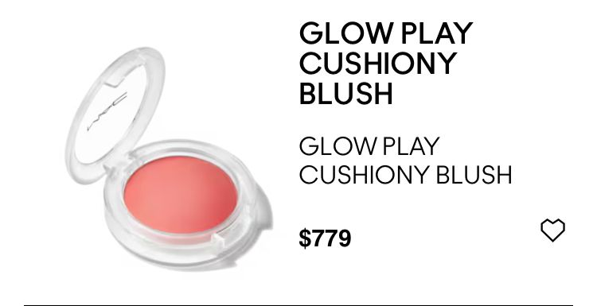
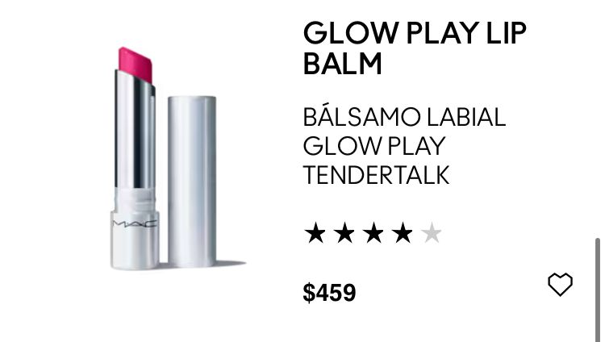
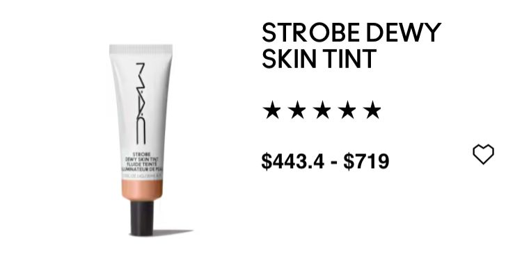
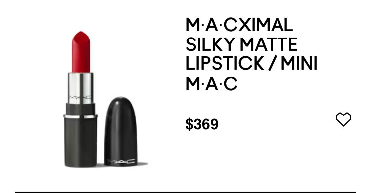
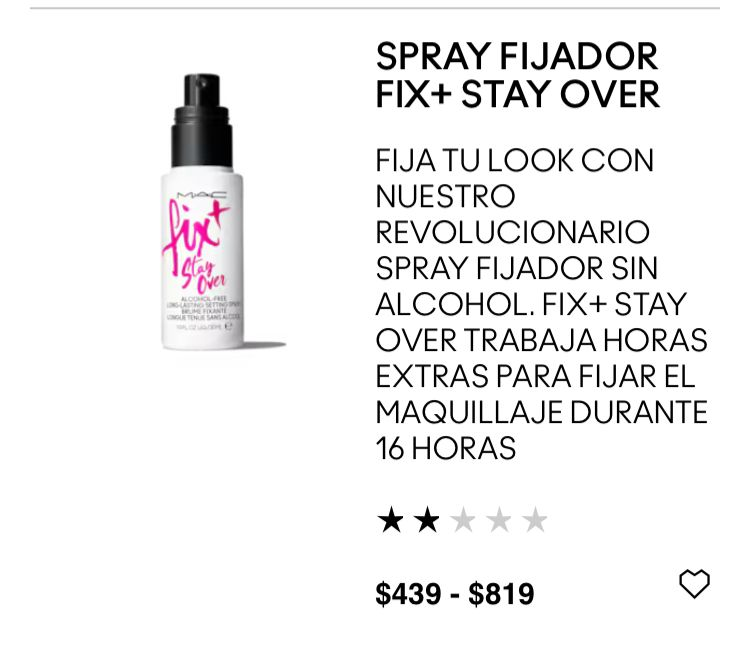
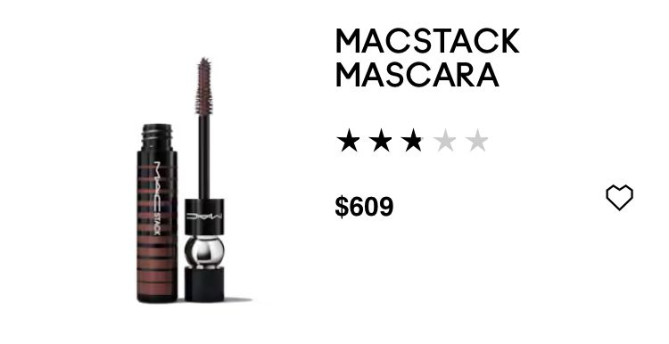
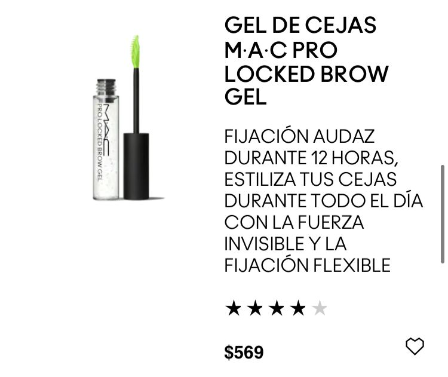
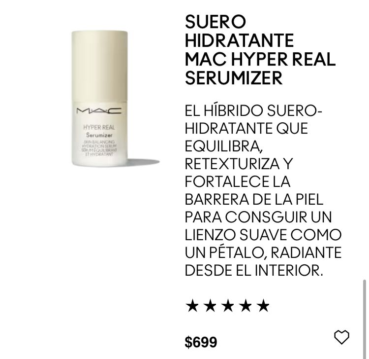

Mac cosmetic
Mac es una marca de cosméticos para mujeres que tuvo sus inicios en Toronto Canadá, las siglas “MAC” provienen de la palabra “Make- Up Art Cosmetics”, MAC fue fundada por Frank Toskan; artista, fotógrafo y maquillador y por Frank Angelo; dueño de un salón de belleza.
Cuando Toskan y Angelo creaban fotografías, se dieron cuenta que las tonalidades de maquillaje que las marcas ofrecían no eran suficientes para que ellos pudieran lograr una buena fotografía, por ello se enfocaron en crear una marca de cosméticos de una manera elegante con una amplia gama cromática.
Cuando comenzaron a crear la marca, los cosméticos eran fabricados en sus cocinas, para después ser vendidos en su salón de belleza y por consecuente a otros estilistas y gente del medio, pero fue hasta marzo de 1984 cuando le lanzó la marca al público y desde 1994 MAC se hizó parte de Estée Lauder Companies.
Algunos de sus productos son








Regresar